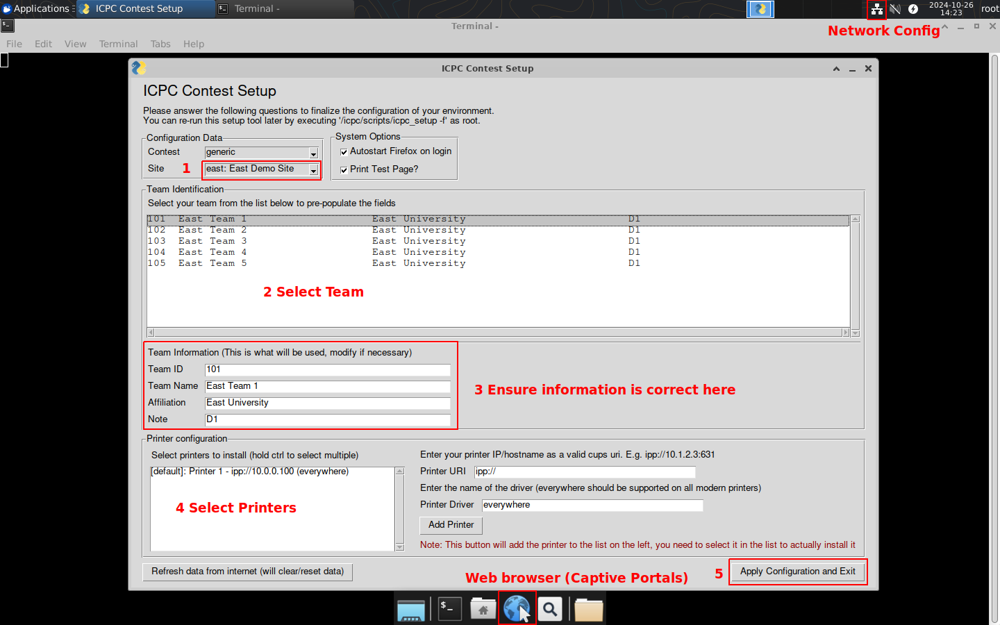
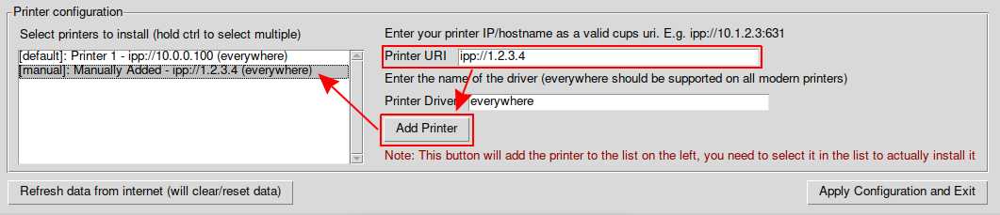
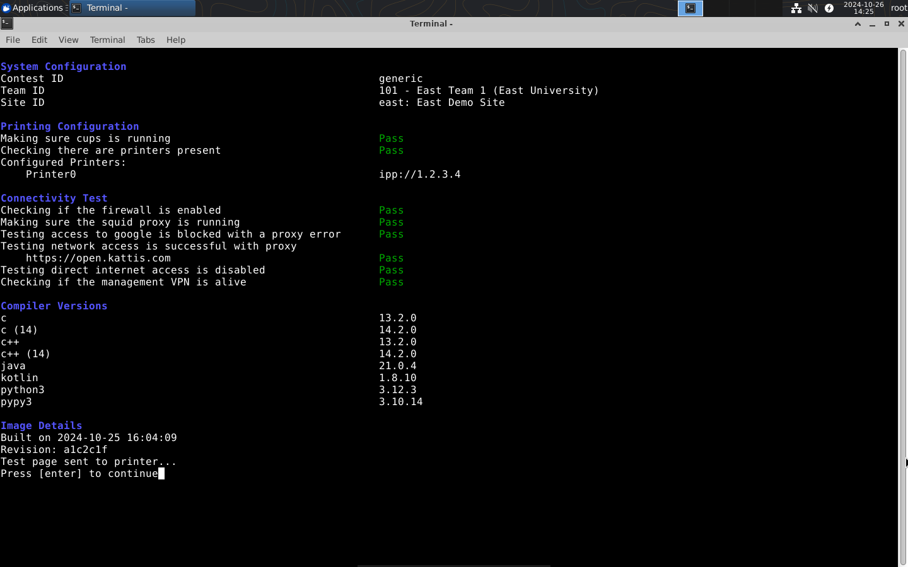
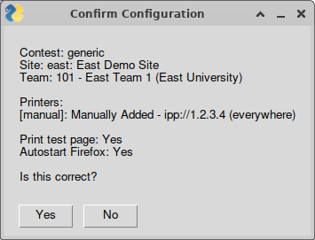

When you first boot the flash drive, you will trigger the set up wizard. This document walks through the configuration options available.

When the system first boots up you should see a screen like the following.
The general procedure for configuring the system is as follows:
Choose your site from the dropdown. This will fetch the team information for the selected site from the network (and potentially erase any existing team information you may have changed)
Next select a team from the list. This will populate the Team ID, Team Name, Affiliation, and Note fields below.
Make any changes necessary to the information to ensure it is correct. This information is what will show up on the team desktop background, and at the top of any printouts.
Select any printers you want to add to this machine from the list on the left. If the printer you want to add is missing from the list,
you can enter the URI for it on the right (often ipp://PRINTERIP and the everywhere driver should work with most printers made in the last 10 years).
After entering the URI and the driver, make sure to click the "Add Printer" button to add it to the list on the left.
Additional drivers you might try if everywhere doesn't work for you include ps or pcl.

There are a few system options you can configure as well:
This configuration wizard pulls in some dynamic configuration data from the internet, so it is important to have the network configured correctly.
In the top right of the screen, there is an icon to configure the network. If your hardware is detected automatically, you will likely see a wifi icon instead, and clicking on it will show you a list of networks you can connect to. If you need more advanced configuration, click the "Edit Connections" button in the menu that appears, then the + icon at the bottom to create a new connection and configure all the details.
http://neverssl.com to force any captive portals to show up.
After your network is online, click the "Refresh data from the internet" button at the bottom of the screen, then continue with the setup.

Once you have everything configured correctly, click the "Apply Configuration and Exit". This will first ask you to confirm the changes you are about to make, and then apply them to the machine. You will then see the self-test run, and prompt you to press enter to continue.
